21. Neural Network Models for Regression#
This chapter is adapted from AM207 (Harvard, Fall 2021). Watch the recorded lecture.
In this chapter
Regression as Generalized Linear Models
Neural Networks
Automatic Differentiation and BackPropagation
21.1. Regression as Generalized Linear Models#
Linear Regression Models#
Here is a generalized linear model (GLM) you’ve known since day one!
Alternatively, we can write this model as
That is, injecting covariates into a normal likelihood is precisely linear regression! Just like in the case of logistic regression, we can form scientific hypotheses by examining the parameters of a linear regression model:
How Would You Parameterize a Non-linear Trend?#

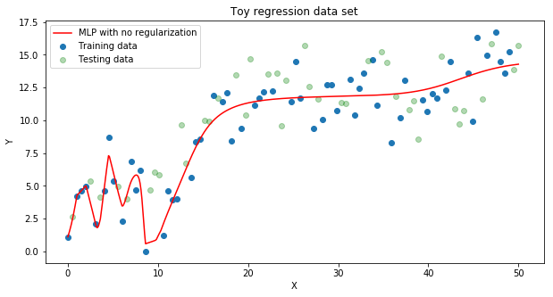
It’s not easy to think of a function \(g(x)\) can capture the trend in the data, e.g. what degree of polynomial should we use?
Review of the Geometry of Logistic Regression#
In logistic regression, we model the probability of an input \(\mathbf{x}\) being labeled ‘1’ as a function of its distance from the hyperplane parametrized by \(\mathbf{w}\)

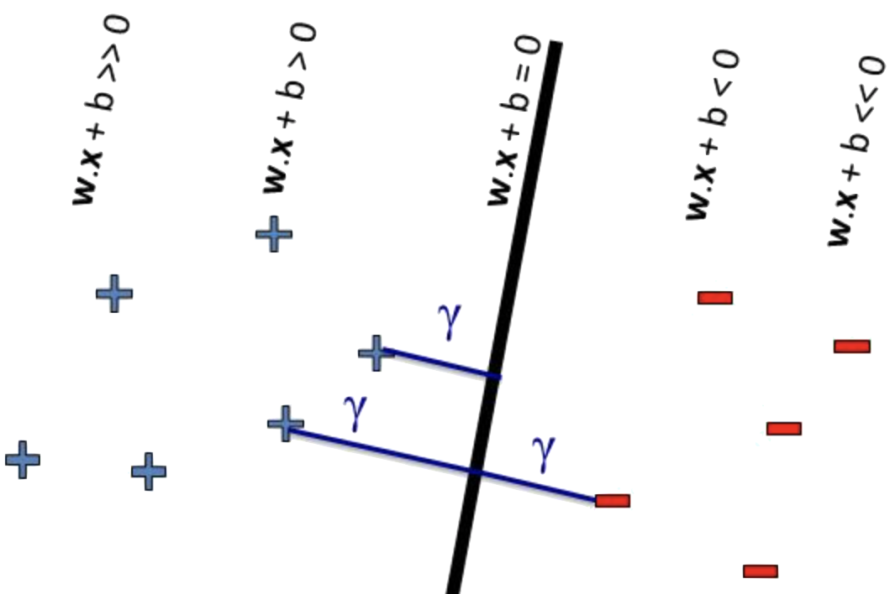
That is, we model \(p(y=1 | \mathbf{w}, \mathbf{x}) = \sigma(\mathbf{w}^\top \mathbf{x})\). Where \(\mathbf{w}^\top \mathbf{x}=0\) is the equation of the decision boundary.
How would you parametrize a elliptical decision boundary?#

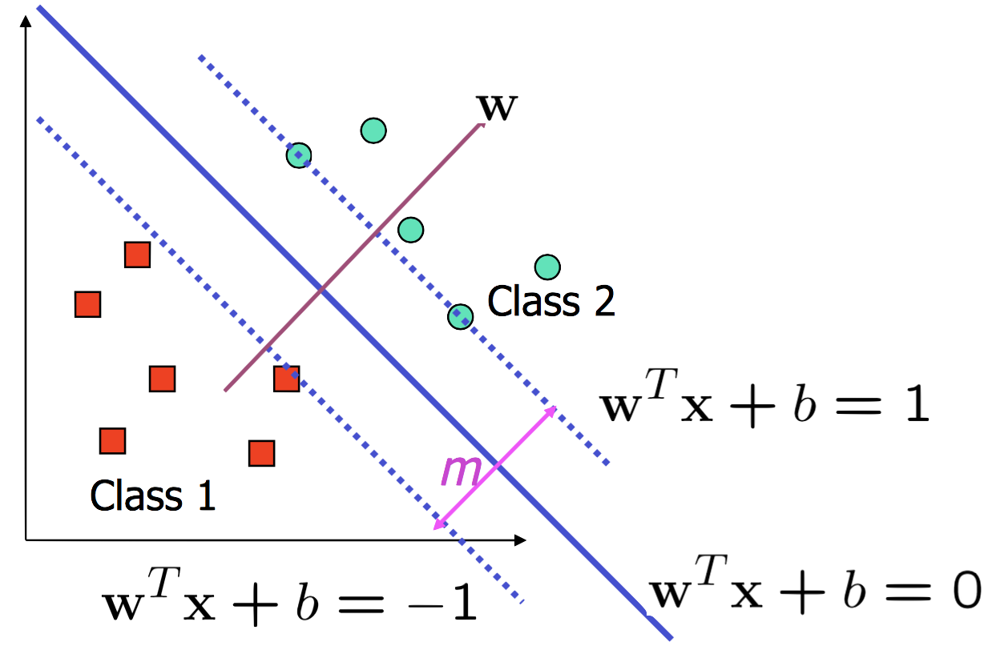
We can say that the decision boundary is given by a quadratic function of the input:
We say that we can fit such a decision boundary using logistic regression with degree 2 polynomial features
How would you parametrize an arbitrary complex decision boundary?#

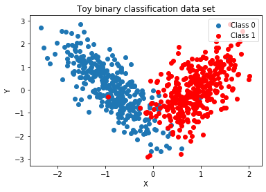
It’s not easy to think of a function \(g(x)\) can capture this decision boundary.
GOAL: Find models that can capture arbitrarily complex functions.
21.2. Neural Networks#
Approximating Arbitrarily Complex Decision Boundaries#
Given an exact parametrization, we could learn the functional form, \(g\), of the decision boundary directly.
However, assuming an exact form for \(g\) is restrictive.
Rather, we can build increasingly good approximations, \(\widehat{g}\), of \(g\) by composing simple functions.
What is a Neural Network?#
Goal: build a good approximation \(\widehat{g}\) of a complex function \(g\) by composing simple functions.
For example, let the following picture represents \(a = f\left(\sum_{i}w_ix_i\right)\), where \(f\) is a non-linear transform, and we denote the intermediate value \(\sum_{i}w_ix_i\) by \(s\).

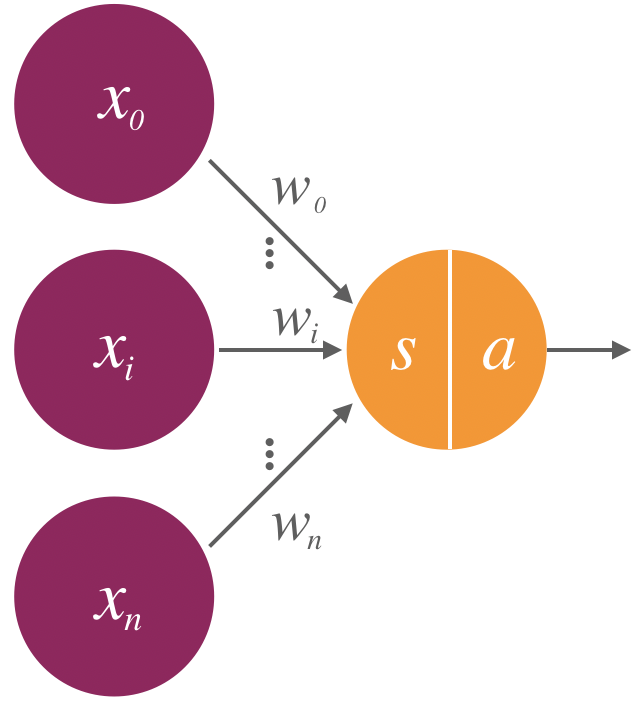
Note: we always assume that \(x_0=1\) and hence \(w_0\) is the intercept or bias of the linear expression \(\sum_i w_i x_i\).
Neural Networks as Function Approximators#
Then we can define the approximation \(\widehat{g}\) with a graphical schema representing a complex series of compositions and sums of the form, \(f\left(\sum_{i}w_ix_i\right)\)

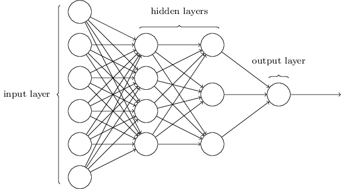
This is a neural network. We denote the weights of the neural network collectively by \(\mathbf{W}\). The non-linear function \(f\) is called the activation function.
Going deeper: Aside
Note: Typically, at each node, we want to take a weighted sum of the values of the previous nodes with a additional bias term. That is, we want as input \(\sum_i w^l_{ij} \text{node}^l_i + \text{bias}_j\) for the \(j\)-th node in the \(l\)-th hidden layer. This is often done by adding an extra node per layer with the value of 1:

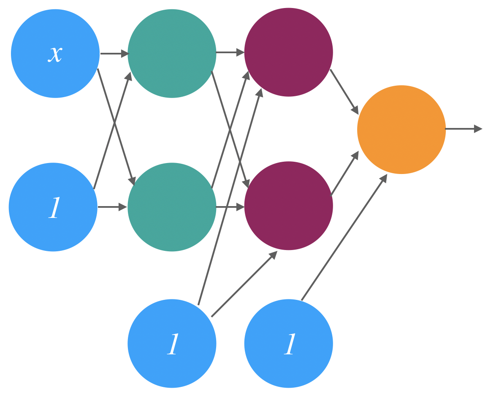
The bias terms are considered to be part of the network parameters and when we jointly denote the network parameters by \(\mathbf{W}\), bias terms are included.
A Flexible Framework for Function Approximation#

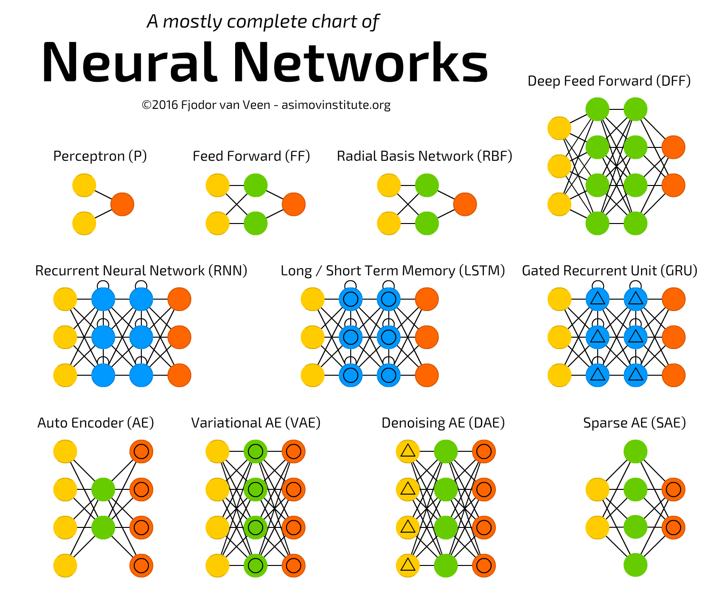
Common Choices for the Activation Function#

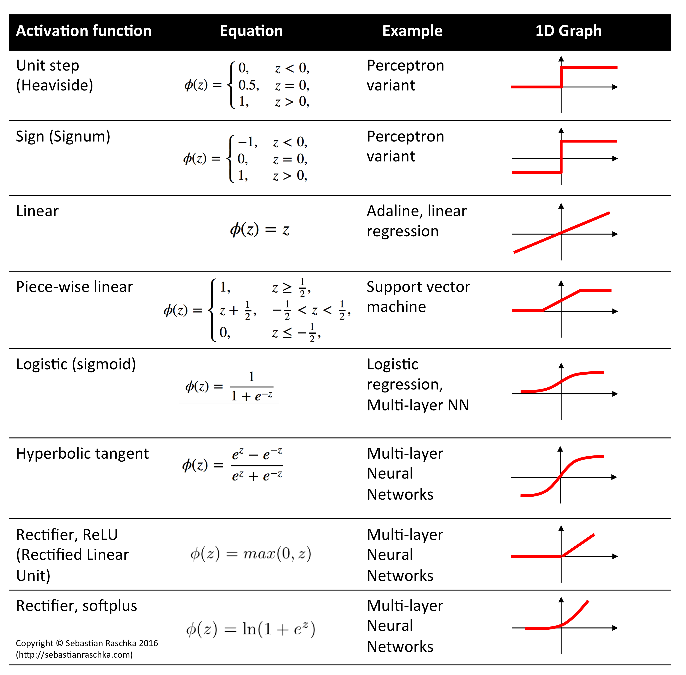
Neural Networks are Universal Function Approximators#
So what kind of functions can be approximated by neural networks?
Theorem: (Hornik, Stinchcombe, White, 1989) Fix a “nice” activation function \(f\). For any continuous function \(g\) on a compact set \(K\), there exists a feedforward neural network with activation \(f\), having only a single hidden layer, which approximates \(g\) to within an arbitrary degree of precision on \(K\).
For this reason, we call neural networks universal function approximators.
Neural Networks Regression#
Model for Regression: \(Y^{(n)}\sim \mathcal{N}(\mu, \sigma^2)\), \(\mu = g_\mathbf{W}(\mathbf{X}^{(n)})\), where \(g_\mathbf{W}\) is a neural network with parameters \(\mathbf{W}\).
Training Objective: find \(\mathbf{W}\) to maximize the likelihood of our data. This is equivalent to minimizing the Mean Square Error,
Optimizing the Training Objective: For linear regression (when \(g_\mathbf{W}\) is a linear function), we computed the gradient of the MSE with respective to the model parameters \(\mathbf{W}\), set it equal to zero and solved for the optimal \(\mathbf{W}\) analytically (see the Chapter 1 problem set). For logistic regression, we computed the gradient and used (stochastic) gradient descent to “solve for where the gradient is zero”.
Can we do the same when \(g_\mathbf{W}\) is a neural network?
21.3. Automatic Differentiation and Backpropagation#
Gradient Computation for Neural Networks#
Computing the gradient for any parameter \(w^l_{ij}\) in the following network requires us to use the chain rule:
This is because a neural network is just a big composition of functions.

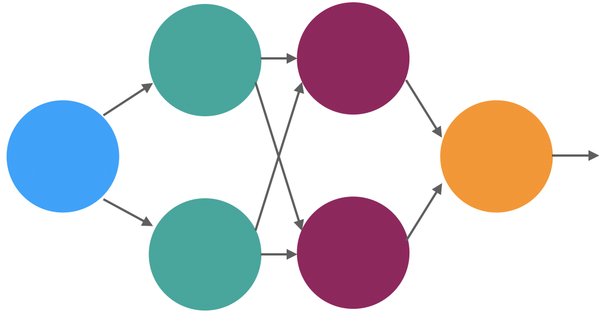
Example: Computing Neural Network Gradients#

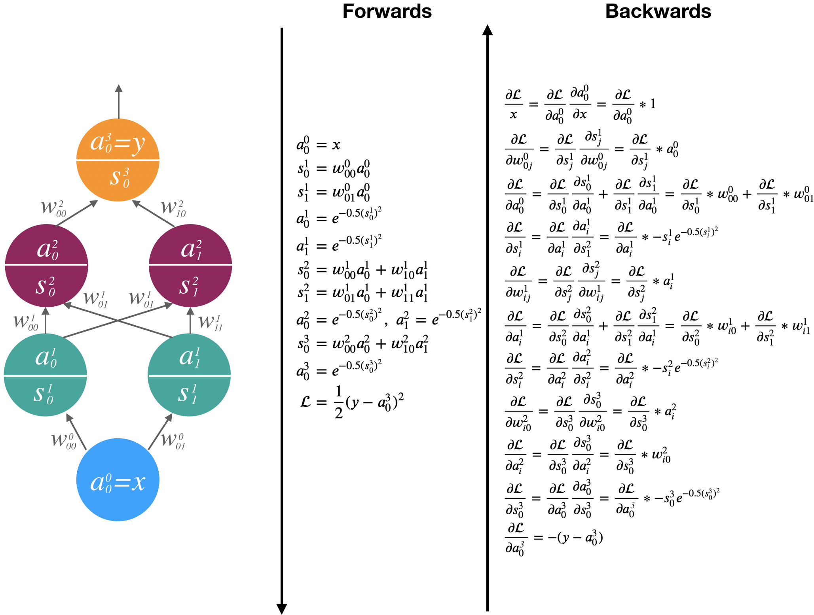
Backpropagation: Gradient Descent for Neural Networks#
The backpropagation algorithm consists of three phases:
(Initialize) initialize the network parameters \(\mathbf{W}\)
Repeat:
(Forward Pass) compute all intermediate values \(s_{ij}^l\) and \(a_{ij}^l\) for the given covariates \(\mathbf{X}\)
(Backward Pass) compute all the gradients \(\frac{\partial \mathcal{L}}{\partial w^l_{ij}}\)
(Update Parameters) update each parameter by \(-\eta \frac{\partial \mathcal{L}}{\partial w^l_{ij}}\)

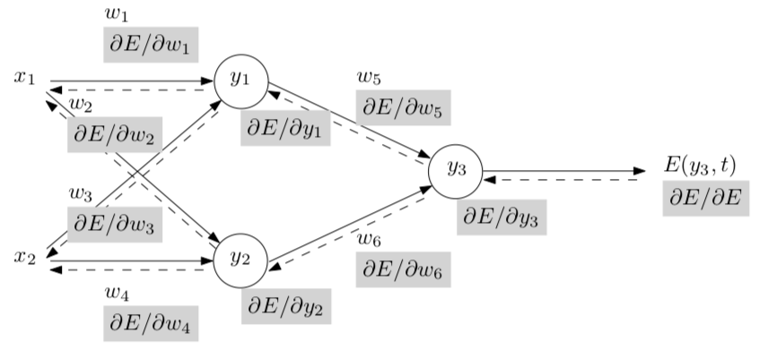
Gradient Computation with Automatic Differentiation#
The forwards-backwards way of computing the gradient lends itself to an algorithm that automates gradient computation for any neural network.
This is a special instance of reverse mode automatic differentiation – a method of algorithmically computing exact gradients for functions defined by combinations of simple functions, by drawing graphical models of the composition of functions and then taking gradients by going forwards-backwards.

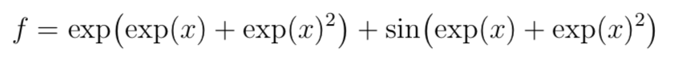

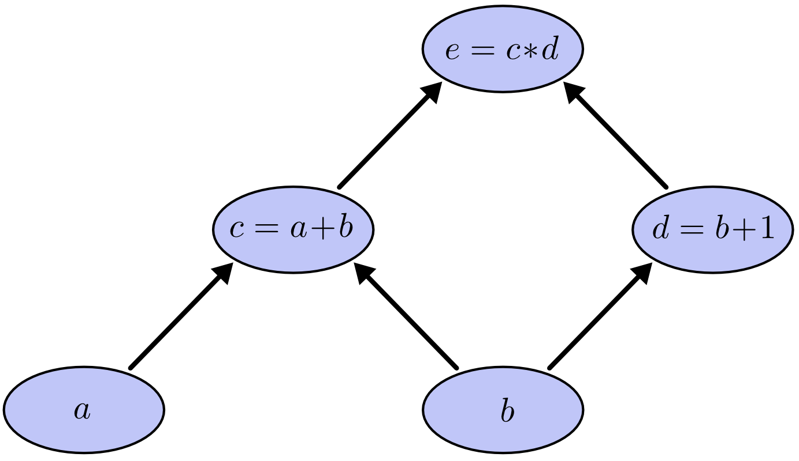
21.4. What Does a Neural Network Learn?#
Why is a Neural Network Classifier So Effective?#
Visualizing the decision boundary:

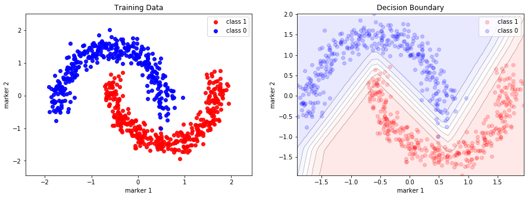
Visualizing the output of the last hidden layer.
Going deeper: Aside
Before neural network models became wildly popular in machine learning, a common method for building non-linear classifiers is to first map the data, in the input space \(\mathbb{R}^{\text{input}}\), into a ‘feature’ space \(\mathbb{R}^{\text{feature}}\), such that the classes are well-separated in the feature space. Then, a linear classifier can be fitted to the transformed data.
If we ignore the output node of our neural network classifier, we are left with a function, \(\mathbb{R}^{2} \to \mathbb{R}^2\), mapping the data from the input space to a 2-dimensional feature space. The transformed data (and in general, the output from a hidden layer in a neural network) is called a representation of the data.

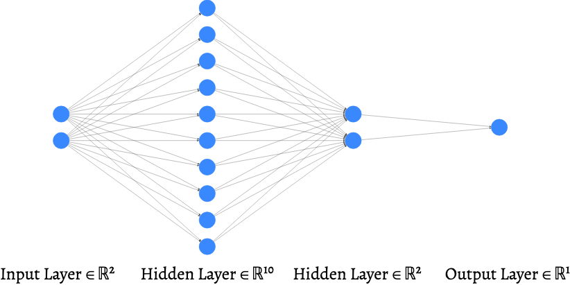
Visualizing these representations can often shed light on how and what neural network models learns from the data.

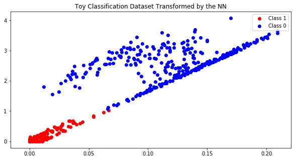
Two Interpretations of a Neural Network Classifier:#
| A Complex Decision Boundary $g\quad\quad\quad\quad\quad$ | A Transformation $g_0$ and a linear model $g_1\quad\quad\quad\quad$ |
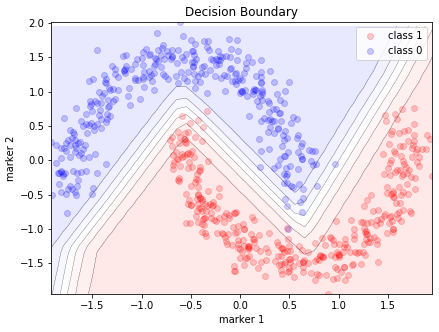 |
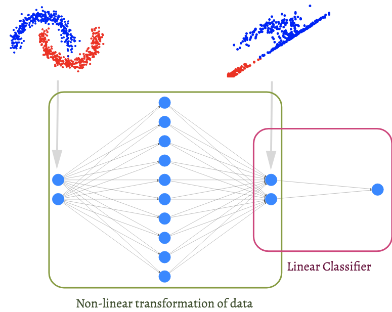 |
21.5. With Great Flexibility Comes with Great Problems#
Neural Network Regression vs Linear Regression#
Linear models are easy to interpret. Once we’ve found the MLE of the model parameters, we can formulate scientific hypotheses about the relationship between the outcome \(Y\) and the covariates \(\mathbf{X}\):
What do the weights of a neural network tell you about the relationship between the covariates and the outcome?
Interpretable Deep Learning#
We might be tempted to conclude that neural networks are uninterpretable due to their complexity. But just because we can’t understand neural networks by inspecting the value of the individual weights, it does not mean that we can’t understand them.
In The Mythos of Model Interpretability, the authors survey a large number of methods for interpreting deep models.

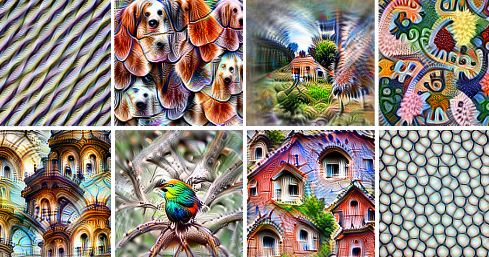
Can Machine Learning Models Make Use of Human Concepts?#
(with Anita Mahinpei, Justin Clark, Ike Lage, Finale Doshi-Velez)
What if instead building complex non-linear models based on raw inputs, we instead build simple linear models based on human interpretable concepts? We use a neural network to predict concepts from inputs and then use a linear model to predict the outcome from the concepts. We interpret the relationship between the outcome and the concepts via the linear model. These models are called concept bottleneck models.
In The Promises and Pitfalls of Black-box Concept Learning Models, we examine the advantages and drawbacks of these models.

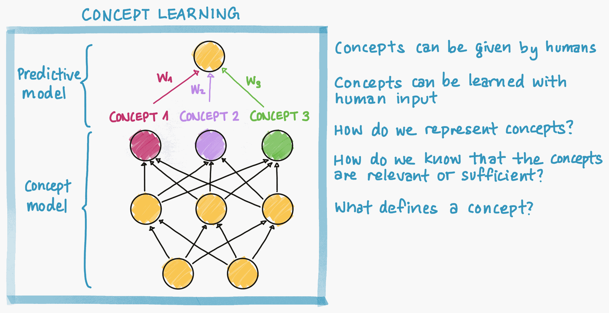
Can Machine Learning Models Learn to Explore Hypothetical Scenarios?#
(with Michael Downs, Jonathan Chu, Wisoo Song, Yaniv Yacoby, Finale Doshi-Velez)
Rather than explaining why the model made a decision, it’s often more helpful to explain how to change the data in order to change the model’s decision. This modified input is a counter-factual. In CRUDS: Counterfactual Recourse Using Disentangled Subspaces, we study how to automatically generate counter-factual explanations that can help users achieve a favorable outcome from a decision system.

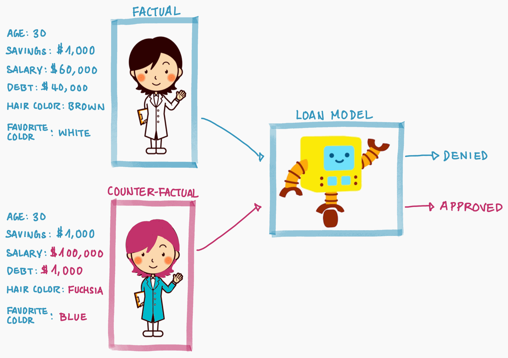
Right for the Right Reasons?#
In An explainable deep-learning algorithm for the detection of acute intracranial haemorrhage from small datasets, the authors build a neural network model to detect acute intracranial haemorrhage (ICH) and classifies five ICH subtypes.
Model classifications are explained by highlighting the pixels that contributed the most to the decision. The highlighted regions tends to overlapped with ‘bleeding points’ annotated by neuroradiologists on the images.

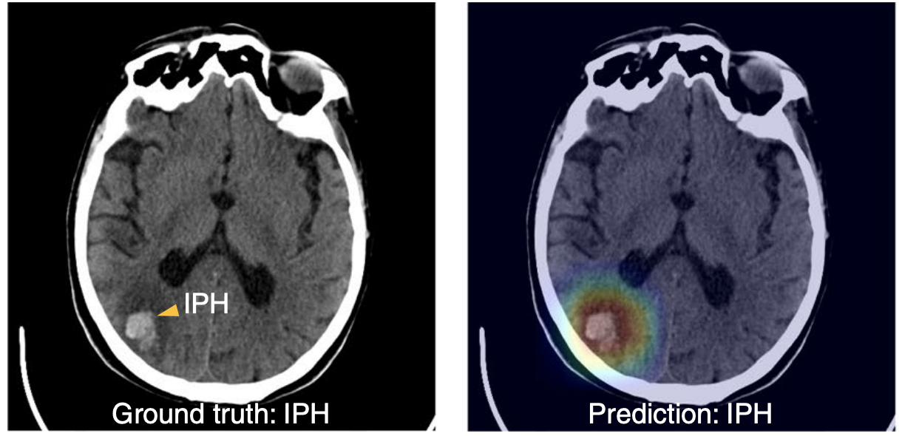
The Perils of Explanations#
In How machine-learning recommendations influence clinician treatment selections: the example of antidepressant selection, the authors found that clinicians interacting with incorrect recommendations paired with simple explanations experienced significant reduction in treatment selection accuracy.

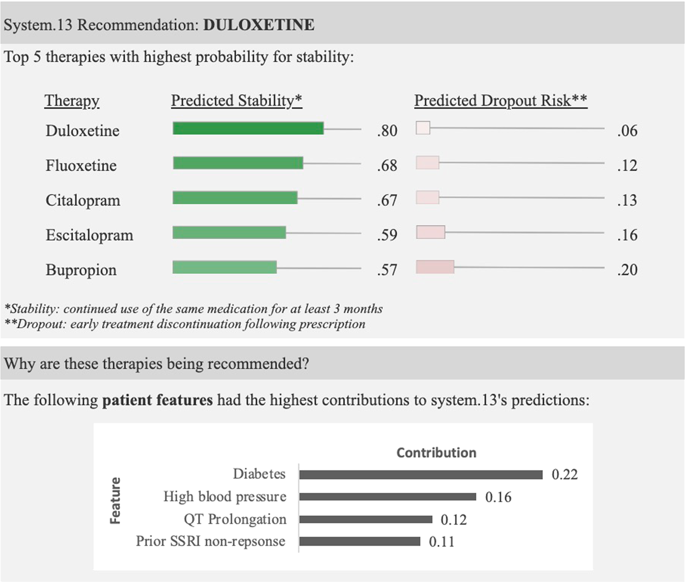
Take-away: Incorrect ML recommendations may adversely impact clinician treatment selections and that explanations are insufficient for addressing overreliance on imperfect ML algorithms.
Generalization Error and Bias/Variance#
Complex models have low bias – they can model a wide range of functions, given enough samples.
But complex models like neural networks can use their ‘extra’ capacity to explain non-meaningful features of the training data that are unlikely to appear in the test data (i.e. noise). These models have high variance – they are very sensitive to small changes in the data distribution, leading to drastic performance decrease from train to test settings.
|
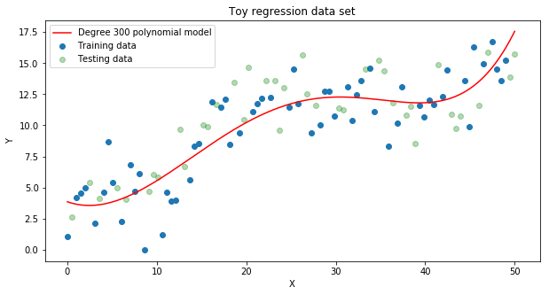 |

|
Generalization of Deep Models#
Just as in the case of linear and polynomial models, we can prevent neural networks from overfitting (i.e. poor generalization due to high variance) by regularization or by ensembling a large number of models.
However, a new body of work like Deep Double Descent: Where Bigger Models and More Data Hurt show that very wide neural networks (with far more parameters than there are data observations) actually ceases to overfit as the width surpasses a certain threshold. In fact, as the width of a neural network approaches infinity, training the neural network becomes kernel regression (this kernel is called the neural tangent kernel)!
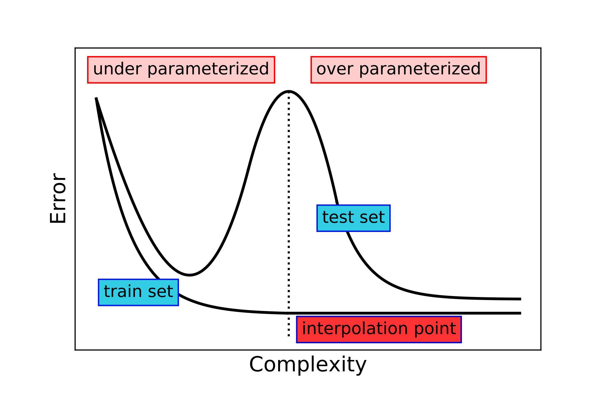
21.6. Summary#
(Why is NN a Big Deal?) Neural networks are universal function approximators that are easy to compute with and easy to train.
Specifically, we can build a very very complex function using very simple and numerically stable functions and fast operations (like vectorized addition, multiplication and simple non-linear function evaluation). In fact, we can approximate any “nice” non-linear function arbitrarily well with a neural network.
It’s easy to find the MLE of NN parameters by gradient descent, since computing the gradient is just recursively applying the chain rule of differentiation.
Lesson: If you need a “generic” non-linear model for data, use a neural network.
(Why is NN So Good at Modeling Data?) Instead of thinking about NNs as representing very complex regression functions or very complex decision boundaries, we can think of NNs as:
first transforming the data into a form that is simple to capture with a linear model, we call these representations or features of the data
fitting a linear model on the transformed data
| A Complex Decision Boundary $g\quad\quad\quad\quad\quad$ | A Transformation $g_0$ and a linear model $g_1\quad\quad\quad\quad$ |
Neural Network Regression vs Linear Regression#
Linear models are easy to interpret. Once we’ve found the MLE of the model parameters, we can formulate scientific hypotheses about the relationship between the outcome \(Y\) and the covariates \(\mathbf{X}\):
What do the weights of a neural network tell you about the relationship between the covariates and the outcome?